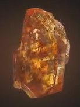
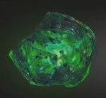
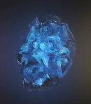
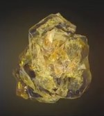
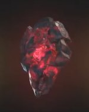
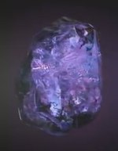

| Soul |
Orange |
Allows the user to steal, control, manipulate, and alter living and dead souls. The Soul Gem also acts as gateway to an idyllic pocket universe. At full potencial, when backed by the Power Gem, the Soul Gem grants the user control over all life in the universe. |
 |
| Time |
Green |
Allows the user to see into the past and the future; stop, slow down, speed up or reverse the flow of time; travel through time; change the past and the future; age and de-age beinge, and trap people or entire universes in unending loops of time. At full potencial, when backed by the Power Gem, the Time Gem grants the user omniscience and total control over the past, present, and future. |
 |
| Space |
Blue |
Allows the user to exist in any location; move any object anywhere throughout reality; warp or rearrange space; teleport themselves and other; insrease their speed, and alter the distance between objects contrary to the laws of physics. At full potencial, when backed by the Power Gem, the Space Gem grants the user omnipresence. |
 |
| Mind |
Yellow |
Allows the user to enchance their mental and psionic abilities and access the throughts and dreams of other biengs. At full potencial, when backed by the Power Gem, the Mind Gem can access all minds in existence simultaneously. The Mind Gem is also the manifestatio of the universal subconscious. |
 |
| Reality |
Red |
Allows the user to fulfill their wiches, even if the wish in direct contradiction with scientific laws, and do thinhs that would normally be impossible. At full potencial, when backed by the other five Gems, the Reality Gem allows the user to alter reality on a universal scale and also any type of alternate reality the user wishes./td>
|  |
| Power |
Purple |
Allows the user to access and manipulate all forms of energy; enhance theire physicalstrength and durability; enhance any superhuman ability; and boost the effects of the five Gems. At full potencial, the Power Gem grants the user omnipotence. |
/td>
|